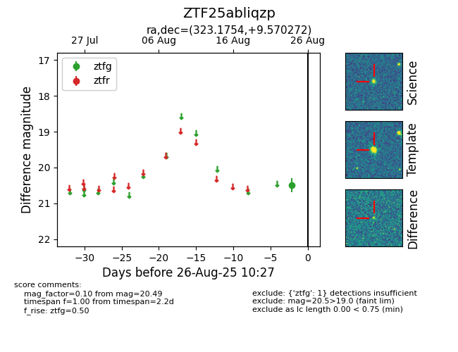

Target ZTF25abliqzp at 2025-08-26 10:27, see:
FINK: fink-portal.org/ZTF25abliqzp
Lasair: lasair-ztf.lsst.ac.uk/objects/ZTF25abliqzp
ALeRCE: alerce.online/object/ZTF25abliqzp
alt names
ZTF25abliqzp (ztf,fink)
coordinates:
equatorial (ra, dec) = (323.1754,+9.57027)
galactic (l, b) = (63.2048,-29.47207)
photometry
last ztfg=20.49
1 ztfg detections
